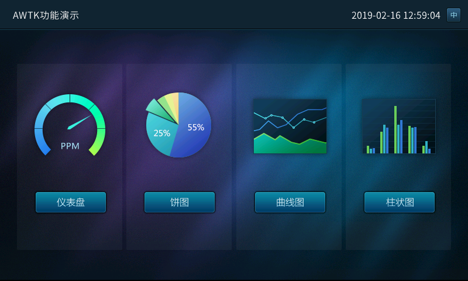
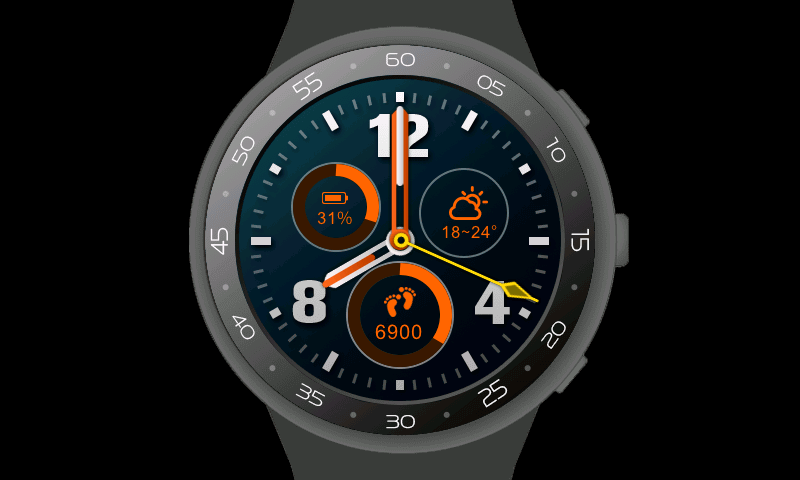

一、介绍
AWTK 全称 Toolkit AnyWhere，是 ZLG 开发的开源 GUI 引擎，旨在为嵌入式系统、WEB、各种小程序、手机和 PC 打造的通用 GUI 引擎，为用户提供一个功能强大、高效可靠、简单易用、可轻松做出炫酷效果的 GUI 引擎。
欢迎广大开发者一起参与开发：生态共建计划。
AWTK 寓意有两个方面：
- Toolkit AnyWhere。
- ZLG 物联网操作系统 AWorksOS 内置 GUI。
AWTK Designer 界面设计工具：
- 不再需要手写 XML
- 拖拽方式设计界面，所见即所得
- 快速预览，一键打包资源
- 注册及下载地址：https://awtk.zlg.cn
运行效果截图：


二、最终目标：
- 支持开发嵌入式应用程序。✔
- 支持开发 Linux 应用程序。✔
- 支持开发 MacOS 应用程序。✔
- 支持开发 Windows 应用程序。✔
- 支持开发 Web APP。✔
- 支持开发 Android 应用程序。✔
- 支持开发 iOS 应用程序。✔
- 支持开发微信小程序。
- 支持开发支付宝小程序。
- 支持开发百度小程序。
- 支持开发 2D 小游戏。
三、主要特色
1. 跨平台
AWTK 是跨平台的，这有两个方面的意思：
-
AWTK 本身是跨平台的。目前支持的平台有 ZLG AWorksOS、Windows、Linux、MacOS、嵌入式 Linux、Android、iOS、Web 和嵌入式裸系统，可以轻松的移植到各种 RTOS 上。AWTK 以后也可以运行在各种小程序平台上运行。
-
AWTK 同时还提供了一套跨平台的基础工具库。其中包括链表、数组、字符串 (UTF8 和 widechar)，事件发射器、值、对象、文件系统、互斥锁和线程、表达式和字符串解析等等，让你用 AWTK 开发的应用程序可以真正跨平台运行。
2. 高效
AWTK 通过一系列的手段保证 AWTK 应用程序高效运行：
- 通过脏矩算法只更新变化的部分。
- 支持 3 FrameBuffer 让界面以最高帧率运行 （可选）。
- UI 描述文件和主题文件使用高效的二进制格式，解析在瞬间完成。
- 支持各种 GPU 加速接口。如 OpenGL、DirectX、Vulkan 和 Metal 等。
- 支持嵌入式平台的各种 2D 加速接口。目前 STM32 的 DMA2D 和 NXP 的 PXP 接口，厂家可以轻松扩展自己的加速接口。
3. 稳定
AWTK 通过下列方式极力让代码稳定可靠：
- 使用 cppcheck 和 facebook infer 进行静态检查。
- 使用 valgrind 进行动态内存检查。
- 近两万行的单元测试代码。
- ZLG 强大 GUI 团队的支持。
- 经过多个实际项目验证。
- 多平台 / 多编译器验证。
- 优秀的架构设计。
- Code Review。
- 手工测试。
4. 强大
- 丰富的控件 （持续增加中）。
- 支持各种图片格式 (png/jpg/gif/svg)。
- 支持各种字体格式 （点阵和矢量）。
- 支持窗口动画。
- 支持控件动画。
- 支持高清屏。
- 支持界面描述文件。
- 支持主题描述文件。
- 主题切换实时生效。
- 支持控件布局策略。
- 支持对话框高亮策略。
- 丰富的辅助工具。
- 支持从低端的 Cortex M3 到各种高端 CPU。
- 支持无文件系统和自定义的文件系统。
- 支持裸系统和 RTOS。
- 支持事件录制与重放进行压力测试。
- 支持 Appium 进行全自动化 UI 测试。
5. 易用
- 大量的示例代码。
- 完善的 API 文档和使用文档。
- ZLG 强大的技术支持团队。
- 用 AWTK 本身开发的 界面编辑器。
- 声明式的界面描述语言。一行代码启用控件动画，启用窗口动画，显示图片 (png/jpg/svg/gif)。
6. 高度扩展性
- 可以扩展自己的控件。
- 可以扩展自己的动画。
- 可以实现自己的主循环。
- 可以扩展自己的软键盘。
- 可以扩展自己的图片加载器。
- 可以扩展自己的字体加载器。
- 可以扩展自己的输入法引擎。
- 可以扩展自己的控件布局算法。
- 可以扩展自己的对话框高亮策略。
- 可以实现自己的 LCD 接口。
- 可以扩展自己的矢量引擎 （如使用 skia/cairo)。
- 所有扩展组件和内置组件具有相同的待遇。
7. 多种开发语言
AWTK 本身是用 C 语言开发的，可以通过 IDL 生成各种脚本语言的绑定。生成的绑定代码不是简单的把 C 语言的 API 映射到脚本语言，而是生成脚本语言原生代码风格的 API。目前支持以下语言 （以后根据需要增加）：
- C
- C++
- lua
- java
- python
- Javascript on jerryscript
- Javascript on nodejs
- Javascript on quickjs
8. 国际化
- 支持 Unicode。
- 支持输入法。
- 支持字符串翻译 （实时生效）。
- 支持图片翻译 （实时生效）。
- 文字双向排版。
9. 为嵌入式软件定制的 MVVM 框架，彻底分离用户界面和业务逻辑。
- 性能高。
- 内存开销小。
- 隔离更彻底。
- 可移植到其它 GUI。
- 代码小 (~5000 行）。
- 无需学习 AWTK 控件本身的 API。
- 支持多种编程语言（目前支持 C/JS)。
详情请参考：https://github.com/zlgopen/awtk-mvvm
10. 开放源码，免费商用 (LGPL)。
欢迎对照 《GUI 引擎评价指标》 进行评测。
四、模拟运行：
下载代码
Windows 下的 git
下载代码
git clone https://github.com/zlgopen/awtk.git
国内用户推荐使用：https://hub.fastgit.org/zlgopen/awtk.git
Windows 下可以用带 GUI 的 git 下载代码。
更新代码（在 awtk 目录下运行）
git pull
用 git 下载代码的好处是以后更新代码非常快。
下载 zip 文件。解压之后需要把文件夹改名为 awtk。
Mac
如果没有安装 nodejs, scons 和 sdl2，请在终端运行下面的命令 （假定已安装 brew)：
brew install scons sdl2 node
编译运行 （在终端下，进入 awtk 所在的目录，并运行下列命令）：
scons
./bin/demoui
Ubuntu （版本 >=16)
如果没有安装 scons 和依赖的软件包，请在终端运行下面的命令：
sudo apt-get install gcc g++ scons libsndio-dev libgtk-3-dev libglu1-mesa libglu1-mesa-dev libgl1-mesa-glx libgl1-mesa-dev libasound2-dev libibus-1.0-dev fcitx-libs-dev git vim clang-format libharfbuzz-dev nodejs
编译运行 （在终端下，进入 awtk 所在的目录，并运行下列命令）：
scons
./bin/demoui
在 Ubuntu 14 上无法启动，请参考 FAQ 修改。
Windows
请先安装 python(64 位系统要安装 64 位版本的 python)，scons 和 Visual Studio C++（版本 >=2017)
如果没有安装 pywin32，请 pip 安装：
pip install pywin32
如果没有安装nodejs，请到 nodejs下载并安装。
编译运行 （在命令行模式下，进入 awtk 所在的目录，并运行下列命令）：
scons
bin\demoui
所有平台
pip install Pillow
npm install -g glob
五、在线演示
六、各个平台的移植
七、各语言的绑定
八、相关工程
第三方提供：
九、文档
十、生态共建计划


返回主页